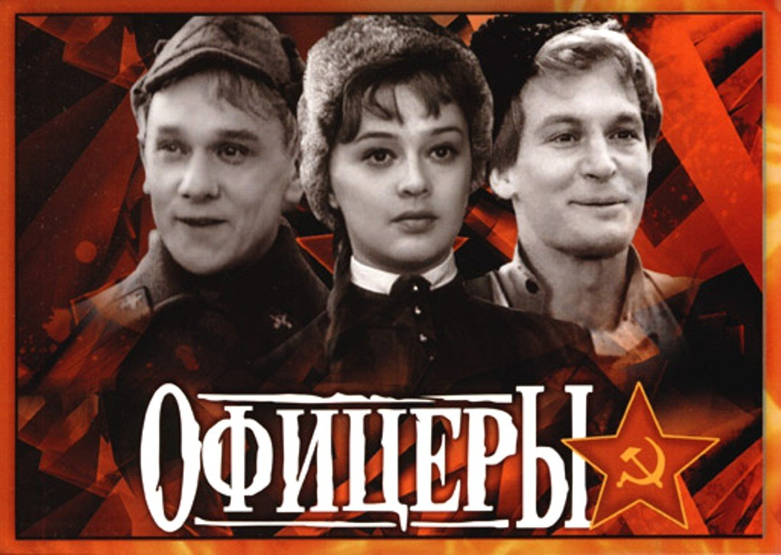

26 июля 1971 г. 48 лет назад
Советский художественный фильм «Офицеры» был снят на Центральной киностудии детских и юношеских фильмов имени М.Горького в 1971 году режиссёром Владимиром Роговым. Премьера кинокартины в СССР состоялась 26 июля 1971 года и в прокате собрала более 53 млн. зрителей.
Этот легендарный фильм, вошедший в Золотой фонд отечественного кинематографа, стал дебютом для Владимира Рогового в качестве режиссёра. Главные роли в нём исполнили – Василий Лановой, Георгий Юматов и Алина Покровская. Другие роли исполнили: Евгений Весник, Андрей Анисимов, Андрей Громов, Юрий Соркин, Владимир Дружников, Наталья Рычагова. Съёмки фильма проходили по всему Советскому Союзу: в Москве и Подмосковье, Твери, Севастополе и Ашхабаде.
Известно, что с инициативой создания этой картины, как повести о нелёгкой судьбе офицерских жён, выступил тогдашний министр обороны СССР Андрей Гречко. Но фильм вышел далеко за поставленные задачи, став повестью о любви к Родине, к жизни... И, конечно, к женщине. Это фильм о трех поколениях советских офицеров, где главные герои – боевые товарищи – несмотря на все превратности судьбы, пройдя множество испытаний, хранят верность дружбе, долгу, офицерской чести.